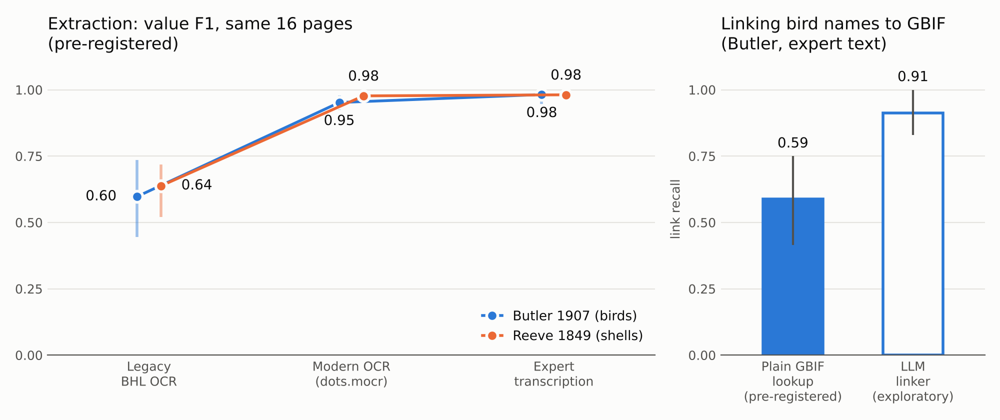
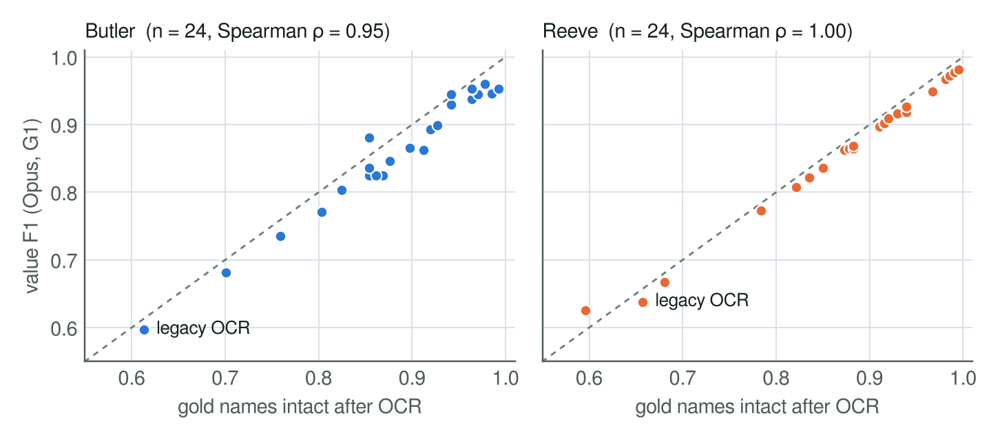

University of Pennsylvania · ai4s.fyi
November 2026 · preprint draft, work in progress, not peer reviewed · github.com/dekunsun/BioEvidenceBench · PDF
Results marked [pre-registered] come from a run frozen before the test pages were processed; results marked [exploratory] were designed after the test outputs were unsealed.
Large language models (LLMs) make it easy to pull species names, places, people and dates out of scanned historical literature. Making those records trustworthy, that is, correct and traceable to the printed page, is harder, and it is not obvious where the next unit of effort should go: better optical character recognition (OCR), a better model, automated verification, entity resolution or human review. We follow one mention through six steps (page to text, text to mention, mention to evidence, mention to entity, the definition of what counts as a datum, and review) and measure how much reliability each step loses. We use two English books from the Biodiversity Heritage Library (BHL), Butler 1907 (birds) and Reeve 1849 (shells), whose pages exist in three versions: BHL's legacy OCR, a modern open OCR and an expert transcription. 607 mentions on 22 pages were labelled by hand before any model output was seen; the plan, gold set and code were frozen before the 16 test pages were processed. The extraction model returns a line number and a verbatim quote; code checks the quote and slices the value, so the model never rewrites the source. [pre-registered] On legacy OCR, value-level F1 was 0.60 (Butler) and 0.64 (Reeve); on modern OCR 0.95 and 0.98; on the expert transcription 0.98 for both. A plain GBIF name lookup then lost 14 of 34 correctly extracted bird names, against 0 lost before linking. Requiring a verbatim quote cost no accuracy, and agreement between two LLMs from different providers did not imply correctness. [exploratory] Across 24 OCR versions of the same pages, the share of gold names that survived OCR intact predicted extraction almost exactly (Spearman 0.95 and 1.00), while page character error rate did not (−0.11 and −0.61). Four Claude models differed by at most 0.05 in extraction F1 but by 0.15 in linking recall. Three routes past bad OCR (modern OCR, LLM repair of legacy OCR, reading the page image) reached similar F1 but left very different evidence for an auditor. On these books, OCR was the first bottleneck and modern OCR removed most of it; after that, trust was limited by entity resolution and by the definition of what counts as a datum, not by the extraction model. We do not claim this for other languages, layouts, print eras, tables or handwriting. [separate study] In a pre-registered training study on the same expert-transcribed collection, supervised fine-tuning taught a small open model (Qwen3-0.6B) to repair 40% of damaged words in legacy OCR lines (4% untrained); reinforcement learning with a verifiable reward (GRPO) taught it to copy the OCR, and added nothing after supervised training.
The Biodiversity Heritage Library holds about 64 million scanned pages of biodiversity literature. Its text layer is largely uncorrected OCR from old print. Several groups are now turning this layer into data: FineBooks re-OCRs BHL with open models and publishes an OCR leaderboard; the Natural History Museum, London (NHM) is building a BHL discovery layer and a knowledge graph on top of re-OCRed text [1–3]; Plazi has long extracted treatments with journal-specific templates [4].
Most evaluations in this space report a single number per stage: a page-level OCR accuracy, or an end-to-end entity F1. A data curator who must decide where to spend the next unit of money needs something different: how much reliability is lost at each step between the printed page and the database record, and what it costs to win it back. This paper asks that question on a small, controlled pilot. It is a system-level evaluation of evidence-grounded extraction, not an OCR benchmark.
The research question, written before any data were seen:
When does improved OCR stop being the main bottleneck, and when do evidence verification and entity resolution become the limiting factors for trustworthy scientific data extraction?
"When" is treated as something to measure; "there is no single threshold" is a valid answer.
Contributions.
OCR for BHL. FineBooks (Hugging Face and EleutherAI) published expert transcriptions for six BHL works from the IMPACT project, a Parquet copy of BHL metadata, per-page outputs of many open OCR models, and a leaderboard scored by character error rate [1]. R. Page has benchmarked further OCR and vision-language models with the same harness, including several Mistral OCR versions, and reports a regression in a newer version [5]. This paper takes OCR quality as given and studies what happens downstream.
NHM's BHL and knowledge-graph work. NHM has built botanical knowledge graphs with relational graph convolutional networks [6], a Planetary Knowledge Base (PKB) prototype with more than 100 million nodes used to align specimen-label text to graph entities [7], and ADEPT, a pipeline that extracts plant functional traits from BHL and online floras, released as a dataset of 888,328 trait values for 59,369 angiosperm species [8, 9]. A 2026 BHL prototype processed about 35,000 pages from two journals, reporting OCR accuracy of 99.57% and taxon extraction F1 of 96.15% [2]; later talks describe re-OCR of the whole corpus with Mistral OCR, linking to GBIF, Catalogue of Life, Wikidata and GRSciColl with provenance and confidence, and an open gold set planned for early 2027 [3]. ADEPT's public evaluation bundle reports micro F1 0.867 on 50 development descriptions and states that it is not a held-out test [9]. These results are not comparable with ours (different samples, entity definitions and matching rules), and we make no claim to reproduce them. Our contribution is complementary: we measure the step-by-step losses that single end-to-end numbers do not show.
Evaluation method. We borrow the evaluation design of Lei, Docherty and Cooper [10], who labelled micrographs in materials science papers before seeing model output and compared LLMs with keyword baselines. Their study did not involve OCR and asked a different question; this work is not an extension of their experiment.
The two English works in FineBooks' expert-transcribed set: Butler, Birds of Great Britain and Ireland, vol. 2 (1907; 341 pages), and Reeve, Conchologia iconica, vol. 5 (1849; 648 pages). Every page exists in four text versions:
| Version | Source | Note |
|---|---|---|
legacy |
BHL's own OCR, per page, from BHL's open data | What BHL serves today |
modern_dots-mocr |
FineBooks' public output of dots.mocr | Lowest CER on the FineBooks board; Markdown, no coordinates |
modern_dots-mocr_plain |
The same text with Markdown marks deleted | Formatting ablation |
expert |
IMPACT expert transcription (CC-BY 3.0) | Gold offsets refer to this text |
Median page character error rate (CER) of the legacy OCR, case-insensitive, on pages with at least 200
characters, was 6.6% for Reeve and 2.0% for Butler; dots.mocr brought it to 1.3% and 1.1%. Reeve's legacy
OCR fails exactly on the fields of interest (italic Latin diagnoses, abbreviations): BULIMUS CHILENSIS
reads BuLlMLS CiilLE.NSls. Book and OCR quality are therefore confounded, and every result is reported
per book.
22 pages were sampled by stratum (entity-rich, low-density, no target names, poor OCR) across the range of legacy CER, using TaxonFinder name counts from BHL metadata to find candidates: 6 development pages (3 per book) and 16 locked test pages (Butler 7, Reeve 9). Strata were defined before the labelling guide; one page sampled as "no entities" turned out to hold two mentions under the guide.
The annotation unit is a mention: a character span in the expert transcription plus one field:
taxon, person, locality, institution, date (event dates only) and vernacular (scored
separately, never in the primary number). The field set follows the entity types of NHM's BHL prototype,
plus dates. The guide went through ten versions (v0.1–v0.10), each with a changelog. The labeller
labelled every page before seeing any model output on it; each delivery was archived unchanged before any
comparison; every later change was decided by the labeller and logged. Rules found on test pages went into
the guide and the gold but never into the prompt, which was fixed at guide v0.6; scores are also reported
with those rows treated as optional. Known typos in the expert transcription (nontifringilla for the
scan's montifringilla) are recorded with the scan's reading as an accepted alternative.
Gold size: development 186 mentions, test 421 (primary fields: Butler 137, Reeve 213). A second labeller labelled 5 test pages with a copy of the guide whose examples did not come from those pages. Agreement on the primary fields was 0.90 (exact span) and 0.95 (overlap); locality was lowest (0.75 exact), almost all at span edges. All 23 disagreements were adjudicated by the first labeller; none changed the gold.
The model never rewrites the source. Lines are numbered; in condition G0 the model returns field and value and code aligns the value to the source afterwards; in G1 the model returns field, line number and a verbatim quote, and code checks the quote character by character in that line and slices the value from the source. A quote that does not match is logged as a silent correction; a quote not found is invalid evidence. Because values are sliced, "hallucination rate" is zero by construction and is not reported; we report unsupported outputs, wrong lines and type-check failures instead.
Pre-registered models: Claude Opus 5.5 (Message Batches API, adaptive thinking, effort medium) and Gemini
4 Carbon (synchronous API with the JSON schema enforced; Google's batch interface did not enforce the
schema in a development run). Temperature was never set. One prompt (p4-guide-v0.6) for every text
version. A rule baseline used gnfinder v1.4.0 for names and regular expressions for places and dates.
One-to-one matching per page and field at three levels: lenient (character overlap), exact (same span) and value (overlap and the same text after normalising case, whitespace, end punctuation, line-end hyphenation and typographic quote and hyphen forms; letters are never changed). Value level is primary, because a well-placed misread name is wrong data. Predictions on OCR text are mapped to expert offsets by character alignment. 95% intervals come from 1,000 page-bootstrap resamples per book, paired for differences; verdicts compare intervals with thresholds written in advance. There is no correction for multiple comparisons: this is a pilot, and every comparison is reported.
For Butler's 29 distinct printed names (43 taxon mentions), the labeller recorded the currently accepted
name, using Avibase first, with a status of resolved, partial, ambiguous or unresolved; a script turned
names into GBIF backbone keys by exact, rank-checked match. The pre-registered linker is a plain GBIF
species/match lookup with no hints. Subfamily names are not scored because the backbone has no such
rank. The pre-registered hypothesis was that more gold-resolved names are lost at linking than before it.
A prediction is flagged "proposed auto-accept" if the other model extracted an overlapping span of the same field and the evidence and type checks pass. Nothing skips review; flags are scored against the gold set to see how many errors would have passed. Verdicts need at least 10 unflagged predictions.
Test-page outputs were written to a sealed archive on arrival. Before unsealing, the gold set, guide,
prompt, scorer, analysis code and run settings were hashed into FREEZE.json; the unseal script refuses
to run unless every hash matches. The pre-registration itself is frozen, so every later change is logged
in a separate deviations file.

| Value F1, primary fields, G1 | Butler (137 gold) | Reeve (213 gold) |
|---|---|---|
| Opus, legacy OCR | 0.597 [0.445, 0.736] | 0.638 [0.521, 0.719] |
| Opus, modern OCR | 0.952 [0.923, 0.979] | 0.977 [0.954, 0.997] |
| Opus, expert transcription | 0.982 [0.947, 1.000] | 0.981 [0.974, 1.000] |
| Gemini, legacy / modern / expert | 0.604 / 0.964 / 0.975 | 0.642 / 0.979 / 0.988 |
For Reeve, legacy → modern gained +0.34 [0.25, 0.46] (verdict: supports, threshold 0.10) and modern → expert +0.005 [−0.015, 0.03] (supports, below 0.05). Butler is descriptive: +0.36 and +0.03 [0.01, 0.06]. On legacy OCR the models found the right place (lenient F1 0.93–0.97) but copied the misread text. Removing Markdown changed F1 by −0.015 to 0. The labeller tagged each of the 163 gold mentions that Opus got wrong in some text version (several tags allowed): 151 were OCR-sensitive (130 only that), 17 extraction or reasoning errors, 32 ambiguous or mixed.
On the expert text, the LLM's recall was higher for taxon and person in both books and for Butler's localities (supports); Reeve's localities and institutions and Butler's dates were inconclusive. Taxon value F1 was 1.00 against 0.64 (Butler) and 0.99 against 0.54 (Reeve). The largest gap was for person (recall +0.74 and +0.78), not for institution as predicted.
Requiring a verbatim quote changed recall by −0.015 to +0.007 (no cost; supports). Neither condition produced an unsupported output in either book or text version (0 of 174–232 outputs per cell), and there were no wrong lines or silent corrections. The expected reduction could therefore not be observed (§7.3).
The two models agreed on 99–100% of predictions, leaving at most 2 unflagged per book and text version: too few to compare. Errors inside the "proposed auto-accept" set were 3 (Butler) and 4 (Reeve) on the expert text, 6 and 5 on modern OCR, and 50 and 75 on legacy OCR. Both models copied the same OCR damage.
On the expert text, of 34 gold-resolved Butler names, 14 were lost at linking and 0 before it
(difference 0.41 [0.25, 0.60]; supports); on modern OCR, 13 against 1 (0.35 [0.10, 0.55]). Plain-lookup
link recall was 0.59 even on the expert text (8 matched only at genus, 3 to the wrong taxon, 3 not found)
and 0.12 on legacy OCR. The lost names are old genera and synonyms (Aedon, Lusciniola, Munia),
names now treated as races of another species (Motacilla beema), abbreviated genera whose full name is
not on the page (M. minuta) and a homonym (Passer).
Treating the 12 gold rows decided by guide rules added after the prompt as optional changed primary F1 by at most 0.004.
Everything in this section was designed after the test outputs were unsealed, uses the same 16 test pages, frozen gold and scorer, and needs a fresh test set before it counts as a finding.
The 22 FineBooks OCR rows whose outputs may be sent to an API, Mistral OCR (through OpenRouter) and legacy OCR (24 versions per book) were run through the frozen G1 condition. Value F1 tracked the share of gold names that survived OCR intact (Spearman 0.95 Butler, 1.00 Reeve) and not page CER (−0.11, −0.61). Several OCR models with page CER under 0.5% kept only 57–79% of Butler's names intact. Extraction recall was close to preservation (median gap +0.01): if the name survives OCR, the model gets it.

Mostly. A GBIF lookup with an animal hint and abbreviation expansion reached 0.62. An LLM linker (printed
name and its context → currently accepted name → GBIF) reached 0.91 on the expert text and 0.71 on legacy
OCR (from 0.12). Its remaining misses are taxonomic judgments (Phylloscopus tristis as a race of
P. collybita). The model mattered here: Opus 0.91, Fable 5.2 0.88, Sonnet 5.5 0.79, Haiku 5.5 0.76.
Linnaeus for
Linnæus, Turritella brevisis); repair reached only 0.81 and 0.87.Each row is a short check on the same 16 test pages unless stated; details and run folders are in Results.
| Question | Result |
|---|---|
| Does a cheaper or stronger extraction model change the picture? | Value F1 (G1, Butler / Reeve) on modern OCR: Haiku 5.5 0.94 / 0.95, Sonnet 5.5 0.93 / 0.97, Opus 5.5 0.95 / 0.98, Fable 5.2 0.96 / 0.98; on legacy OCR all 0.58–0.65. Cost per 1,000 page-passes: Haiku US$0.6 (batch), Sonnet 10 (sync), Opus 11 (batch), Fable 43 (sync). The model gap (≤ 0.05) is small next to the OCR gap (about 0.35). |
| Is repair driven by a remembered page? | No sign of it. In the expert text, 69 gold names got a visible typo (two letters swapped) and 29 binomials got a fluent epithet swap from elsewhere in the same book. Opus and Fable restored 65–68 of the typos, Haiku 54; none of the three restored any of the 29 fluent swaps. This does not rule out memorisation in general. |
| Can a vision model give image-level evidence? | Values yes, boxes no. Reading the image and drawing a box per mention (V3), Opus got 96–98% of values right, but the box contained the right word (Internet Archive hOCR words, lenient match) for 67% (Butler) and 40% (Reeve, dense two-column pages). |
| Do cheap signals find the errors? | On legacy OCR, two mechanical checks (OCR-junk characters; no exact GBIF match for a taxon) flagged 25% of outputs and caught 55% of errors at 77% precision; model disagreement caught 7%. On modern OCR errors were rare (about 3%) and no cheap signal found them. |
| Does it run on whole books? | The frozen G1 prompt on 682 pages: 7.5 minutes per batch, US$7.64 (Opus), US$0.40 (Haiku); the 16 test pages inside the run reproduced the evaluated F1 (0.96 / 0.98). In a 60-item blind spot-check, all 25 decided Opus outputs outside the sample were correct; 19 of 21 "unsure" items were index entries, and ruling BHL Index pages out of scope cut the review queue from 1,404 to 555 mentions. Median review time 30 s per item (9 timed items). |
| Does it hold on another discipline? | 8 botany pages (PCAS 1898, no expert transcription, value-level, pages pooled, Opus): legacy OCR 0.70, repair 0.83, image only 0.83 as labelled (taxa 0.73, 0.96, 0.99). After five boundary conventions were adjudicated, having seen model output: 0.80, 0.94, 0.94. Both versions are reported. |
On these two English printed books the answer to the research question is: OCR is the first bottleneck, and it stops being the main one as soon as entity names survive it. Modern OCR, LLM repair and reading the image all bring extraction to about 0.95. After that the limits are entity resolution (the largest measured loss on clean text), the definition of what counts as a datum (boundary conventions and undefined scope account for differences of up to ten points), and errors no later step can see (fluent OCR misreadings). There is no single page-CER threshold; name preservation is the measure to watch.
The three routes past bad OCR are not interchangeable for a curator. Modern OCR with quote-checked extraction yields values sliced from text, with a line and a quote an auditor can check mechanically. Repair yields the model's reading, of which about one in twelve changed values is a confident wrong reading. Image reading yields a transcription with no text anchor and boxes that cannot be trusted as pointers. Where records go to GBIF or into a citable dataset, the route should be chosen on audit cost per value as well as on F1, and image coordinates should come from OCR word boxes.
Requiring a verbatim quote produced no measurable accuracy gain. That is a statement about the metric: both conditions took values from the source by code, so the comparison was between two forms of verification, not verification against none. The value of evidence is traceability and audit cost, and it should be measured as such: the share of values traceable to the page, reviewer time per value, and errors caught with and without evidence.
Large re-OCR projects are under way. Our results suggest two cheap additions. First, accept an OCR model (and every new version of it) on name preservation measured on a small labelled sample per kind of material, not on page accuracy; a model that writes fluent errors can score well on page CER and still break names that no later step can repair. Second, report losses per stage, including linking, rather than one end-to-end F1. We would welcome running these tests on open gold sets as they appear.
Keep investing in OCR, accepted on name survival per kind of material; fund entity resolution as its own workstream, with a curator-owned taxonomy policy; write the scope before scaling; review by sampling, with evidence attached; and do not buy a bigger extraction model: Haiku 5.5 was within a few points of Opus 5.5 at about a fifteenth of the cost. If a cheap repair model is wanted, spend on expert examples: in the training study, supervised fine-tuning taught the repair and reinforcement learning from a word-level reward did not.
A separate, pre-registered training study asked whether a cheap model could repair legacy OCR line by line before extraction; it is reported in full in the RL technical report. On a line-repair task built from five IMPACT books, with a word-level verifiable reward for GRPO [13] and a locked test of 500 in-book lines and 500 lines of an unseen French book, Qwen3-0.6B [15] repaired 4% of damaged words untrained and 40–41% after supervised fine-tuning (21% on the French book). GRPO from the untrained model learned to return the OCR unchanged, because copying a damaged line never scored below zero; after fine-tuning it repaired no more words and only broke fewer correct ones, consistent with Yue et al. [14]. Reading answers by hand found two reward holes the automated probes missed. [exploratory] Put in front of extraction, the released checkpoint lifted value F1 on legacy OCR from 0.60 to 0.67 (Butler) and 0.64 to 0.72 (Reeve), about a fifth of the gap to modern OCR, and turned 6 correct names into other names. For these books, a small repair model does not replace re-OCR. GPU cost was about US$5.93.
A pre-registered, stage-by-stage evaluation on two historical books shows that OCR is where most reliability is lost and that modern OCR wins most of it back; after that, linking names to today's taxonomy and defining what counts as a datum limit trust, not the extraction model. Page error rate is the wrong OCR metric for this use; name preservation is the right one. And because routes with equal accuracy leave unequal evidence, the choice between them should be made on audit cost as well as on F1.
Repository: github.com/dekunsun/BioEvidenceBench. Results · evaluation settings, one row per run · product summary and decision memo · lessons learned · annotation guide · pre-registration · deviations · RL technical report and released model. Expert transcriptions: FineBooks / IMPACT / BHL, CC-BY 3.0. BHL metadata: CC0. Total API spend for the project was US$55.65 (evaluation settings); GPU spend for the training study about US$6.
Thanks to the second labeller for five pages of independent labels, and to the FineBooks, IMPACT and BHL teams for open data.
finebooks/bhl-impact-gt, finebooks/bhl-metadata.
https://finebooks-readme.static.hf.space/README.mdGRPOTrainer.